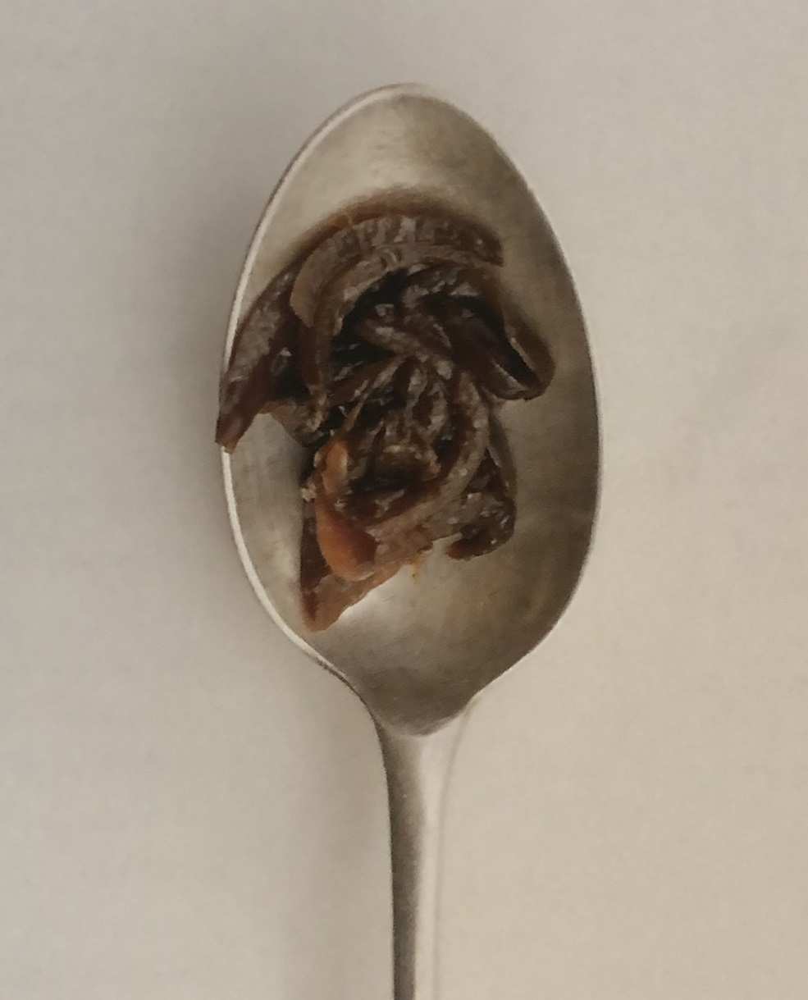

Caramelised Onions
1 serving — 30 minutes
The most important ingredient for this versatile side dish is patience: allow enough time to yield all the natural sweetness of the onions and they will reward you with deep, rich flavours, providing a great contrast to main courses like our panko-crusted jackfruit.
- onion3, large, finely sliced
- tamari1 tablespoon
- rapeseed oilcan sub another oil
Ingredients
Method
Heat a tablespoon or two of oil in a large heavy-based saucepan over a high heat. When it shimmers, add the onions and brown them for about five minutes, stirring occasionally to prevent them from catching. Reduce the heat to low and let them sweat, covered, for another 20 minutes. Add the tamari and cook for another two or three minutes before removing from the heat and setting aside. Reheat before serving.